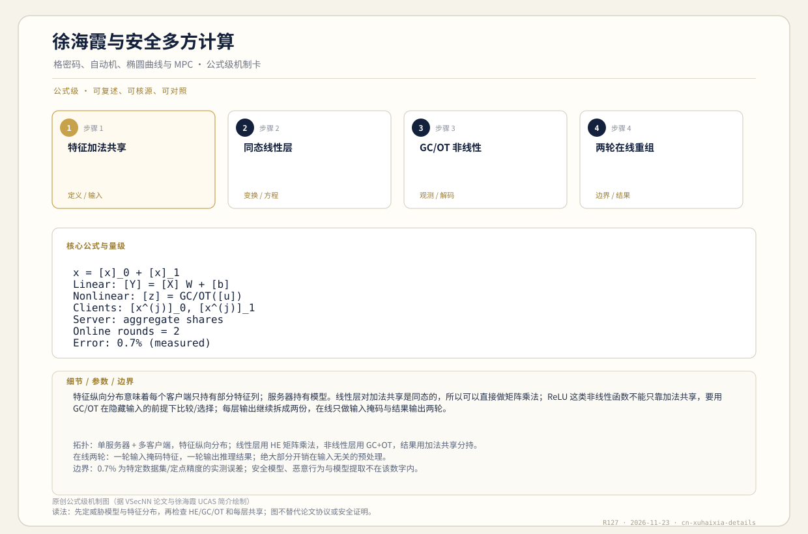

原理与机制
中国密码史：徐海霞与安全多方计算（Xu Haixia and Secure Multiparty Computation）。### 加法共享与线性层
VSecNN 把特征拆成 ([x]_0+[x]_1=x)。加法共享对线性运算同态：若 ([X]) 与 ([b]) 已共享，则 ([Y]=[X]W+[b]) 仍可直接计算。线性层因此可以用同态加密做矩阵乘法，而不必逐元素交互。### 非线性层与在线轮数
ReLU 不能在加法共享上直接比较，VSecNN 用混淆电路与茫然传输在隐藏输入的前提下完成非线性函数；每层结果继续以加法共享由服务器与客户端分持。协议把大量计算放到输入无关的预处理，在线阶段只保留两轮：输入掩码特征、输出推理结果。

为什么重要
隐私保护机器学习的难点不是单个原语，而是“线性层高效、非线性层不泄漏、在线轮数少”三者同时成立。VSecNN 针对特征纵向分布的多客户端场景，把同态加密、GC/OT 与加法共享拼成一个两层结构，是协议分层而非单一密码算法的样本。
应用与实例
1.先确认威胁模型：单服务器/多客户端、特征纵向分布、半诚实还是恶意。2.检查线性层 HE 参数与定点精度，确保矩阵维度、打包与解密边界一致。3.检查非线性层 GC/OT 的输入掩码、OT 实例数与电路规模。4.每层输出必须重新共享，不能把中间明文留在任一方。5.记录在线轮数、预处理成本、通信量与误差；0.7% 只在原论文的数据集与精度设定下成立。### 不能怎么用
不能把两轮在线说成零交互；不能忽略预处理阶段的输入无关成本；不能把半诚实协议直接用于恶意客户端；不能用 0.7% 覆盖所有模型、数据集与定点格式；不能把本文当作形式化安全证明或实现审计。
边界与攻击面
1.拓扑不匹配：特征不是纵向分布，或客户端数量/信任边界改变，协议假设就变。2.安全模型：半诚实、恶意、勾结与公平性假设不同，GC/OT 与 HE 的参数也要变。3.定点精度：0.7% 是特定数据集与量化设定下的实测，换模型或位宽会变。4.非线性层：ReLU 的 GC/OT 实例、输入掩码或 OT 选择位出错会泄漏或算错。5.实现：侧信道、模型提取、恶意输入与拒绝服务不在公式内。
历史与背景
徐海霞 2001 年获首都师范大学博士学位，2001–2003 年做博士后，2004 年起在中国科学院研究生院任教，现为中国科学院信息工程研究所副研究员，研究安全协议、安全多方计算、隐私保护机器学习与区块链。VSecNN 由唐涛、徐海霞、董业、周胤昌、唐锦凌合作完成，2025 年发表于《信息安全学报》。
时间线、证据与争议
登记年份以来源账本为准；背景是秘密共享与多方计算中此前技术、机构与冲突的累积；过程只写有来源支持的参与者、地点与行动；结果写它改变了哪些标准、机器、课程或政策；争议写二手叙述与一手材料的差距。来源包括：Wikipedia search entry for 徐海霞与安全多方计算；《密码简史：穿越远古 展望未来》（杨义先、钮心忻，电子工业出版社，2020，ISBN 9787121398711）。
不要把“发生过”写成“已证明”，也不要把事件标题扩写成机制结论；没有日期的节点只作逻辑位置。
逐步示例与核验
事件时间线模型
背景 → 过程 → 结果 → 争议。背景写此前技术/制度；过程写可核参与者与时间；结果写后续标准、机器、课程或政策；争议写二手叙述与一手材料的差距。
参考出处
- Wikipedia search entry for 徐海霞与安全多方计算. https://zh.wikipedia.org/w/index.php?search=%E5%BE%90%E6%B5%B7%E9%9C%9E%E4%B8%8E%E5%AE%89%E5%85%A8%E5%A4%9A%E6%96%B9%E8%AE%A1%E7%AE%97
- 《密码简史：穿越远古 展望未来》（杨义先、钮心忻，电子工业出版社，2020，ISBN 9787121398711）. https://book.cppinfo.cn/Encyclopedias/home/index?id=3730464